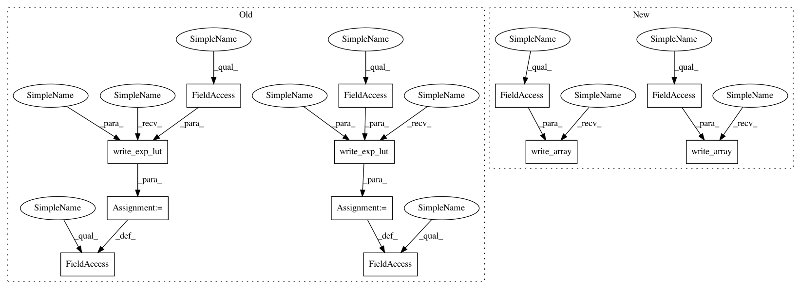

7f1b834d826b18c818d3ccac673fa217cce7046d,spynnaker/pyNN/models/neuron/plasticity/stdp/timing_dependence/timing_dependence_pfister_spike_triplet.py,TimingDependencePfisterSpikeTriplet,write_parameters,#TimingDependencePfisterSpikeTriplet#Any#Any#Any#,113
Before Change
"STDP LUT generation currently only supports 1ms timesteps")
// Write lookup tables
self.__tau_plus_last_entry = plasticity_helpers.write_exp_lut(
spec, self.__tau_plus, LOOKUP_TAU_PLUS_SIZE,
LOOKUP_TAU_PLUS_SHIFT)
self.__tau_minus_last_entry = plasticity_helpers.write_exp_lut(
spec, self.__tau_minus, LOOKUP_TAU_MINUS_SIZE,
LOOKUP_TAU_MINUS_SHIFT)
self.__tau_x_last_entry = plasticity_helpers.write_exp_lut(
spec, self.__tau_x, LOOKUP_TAU_X_SIZE, LOOKUP_TAU_X_SHIFT)
self.__tau_y_last_entry = plasticity_helpers.write_exp_lut(
spec, self.__tau_y, LOOKUP_TAU_Y_SIZE, LOOKUP_TAU_Y_SHIFT)
After Change
"STDP LUT generation currently only supports 1ms timesteps")
// Write lookup tables
spec.write_array(self.__tau_plus_data)
spec.write_array(self.__tau_minus_data)
spec.write_array(self.__tau_x_data)
spec.write_array(self.__tau_y_data)
@property
def synaptic_structure(self):
In pattern: SUPERPATTERN
Frequency: 3
Non-data size: 12
Instances
Project Name: SpiNNakerManchester/sPyNNaker
Commit Name: 7f1b834d826b18c818d3ccac673fa217cce7046d
Time: 2019-10-11
Author: Andrew.Rowley@manchester.ac.uk
File Name: spynnaker/pyNN/models/neuron/plasticity/stdp/timing_dependence/timing_dependence_pfister_spike_triplet.py
Class Name: TimingDependencePfisterSpikeTriplet
Method Name: write_parameters
Project Name: SpiNNakerManchester/sPyNNaker
Commit Name: 7f1b834d826b18c818d3ccac673fa217cce7046d
Time: 2019-10-11
Author: Andrew.Rowley@manchester.ac.uk
File Name: spynnaker/pyNN/models/neuron/plasticity/stdp/timing_dependence/timing_dependence_pfister_spike_triplet.py
Class Name: TimingDependencePfisterSpikeTriplet
Method Name: write_parameters
Project Name: SpiNNakerManchester/sPyNNaker
Commit Name: 7f1b834d826b18c818d3ccac673fa217cce7046d
Time: 2019-10-11
Author: Andrew.Rowley@manchester.ac.uk
File Name: spynnaker/pyNN/models/neuron/plasticity/stdp/timing_dependence/timing_dependence_spike_nearest_pair.py
Class Name: TimingDependenceSpikeNearestPair
Method Name: write_parameters
Project Name: SpiNNakerManchester/sPyNNaker
Commit Name: 7f1b834d826b18c818d3ccac673fa217cce7046d
Time: 2019-10-11
Author: Andrew.Rowley@manchester.ac.uk
File Name: spynnaker/pyNN/models/neuron/plasticity/stdp/timing_dependence/timing_dependence_spike_pair.py
Class Name: TimingDependenceSpikePair
Method Name: write_parameters